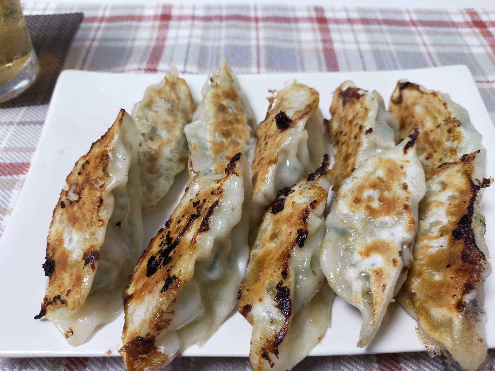

もやし餃子
材料・金額
| 材料 | 購入金額 | 使用量 | 金額 | kcal |
|---|---|---|---|---|
| もやし1袋 | 30 | 1袋 | 30 | 14 |
| ニラ1束 | 94 | 1/2束 | 47 | 10 |
| 豚ひき肉250g | 303 | 150g | 133 | 353 |
| 餃子の皮1袋（24枚入） | 100 | 1袋 | 100 | 329 |
| その他調味料分 | - | - | - | 123 |
| 合計（2人分） | - | - | 310 | 829 |
| 1人分（合計×0.5） | - | - | 155 | 415 |
振り返り
餃子の中の野菜。キャベツや白菜を使うことを止めて、もやしにしてから大分気軽に餃子が作れるようになりました。もやしは600wで2minレンジにかけてから細かく刻んで水分絞って使います。左上に見切れているのはホッピーです。ビールじゃございません。